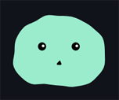

187要素の明度を変える
- CSSのfilterプロパティにbrightness()メソッドを使う
SAMPLE #187filterのbrightness()

明度を変える
クリック
const btn180 = document.querySelector('.btn180');
btn180.addEventListener('click', handleClick);
function handleClick() {
if (btn180.classList.contains('on') === false) {
btn180.classList.add('on');
} else {
btn180.classList.remove('on');
}
}| イベント名 | 意味 |
|---|---|
| transitionend | トランジションが完了したときのイベント |
ホバー
| イベント名 | 意味 |
|---|---|
| animationstart | アニメーションが開始したときのイベント |
| animationiteration | アニメーションで繰り返しが発生したときのイベント |
| animationend | アニメーションが完了したときのイベント |
クリック
クリック
circle182.addEventListener('click', handleClick);
circle182.addEventListener('animationstart', (e) => {
e.target.innerHTML = '開始';
});
circle182.addEventListener('animationend', (e) => {
e.target.innerHTML = '終了';
});
circle182.addEventListener('animationiteration', (e) => {
e.target.innerHTML = '繰り返す';
});
function handleClick(e) {
if (e.target.classList.contains('on') === false) {
e.target.classList.add('on');
}
}
| メソッド | 意味 | 戻り値 |
|---|---|---|
| 要素.animate(オブジェクト, オブジェクト) | アニメーションする | なし |
const square183 = document.querySelector('.square183');
square183.animate(
{
transform: [
'translateX(0px) rotate(0deg)',
'translateX(500px) rotate(360deg)'
]
},
{
duration: 3000,
iterations: Infinity,
direction: 'normal',
easing: 'ease'
}
);大きさを変える
const square184 = document.querySelector('.square184');
square184.animate(
{
transform: [
'scale(1)',
'scale(3)'
]
},
{
duration: 3000,
fill: 'forwards',
easing: 'ease'
}
);移動させる
const square185 = document.querySelector('.square185');
square185.animate(
{
transform: [
'translate(0px)',
'translate(600px)'
]
},
{
duration: 3000,
fill: 'forwards',
easing: 'ease'
}
);透明度を変える
const square186 = document.querySelector('.square186');
square186.animate(
{
opacity: [
'1.0',
'0.2'
]
},
{
duration: 1000,
fill: 'forwards',
easing: 'ease'
}
);
明度を変える
彩度を変える
| メソッド | 意味 | 戻り値 |
|---|---|---|
| requestAnimationFrame(関数) | 時間経過で呼び出したい関数を登録する | 数値 |
tick();
function tick() {
if(条件文) {
requestAnimationFreame(tick);
}
//アニメーション処理
}
tick();
let requestID;
function tick() {
requestID = requestAnimationFreame(tick);
//アニメーション処理
}
cancelAnimationFrame(requestID);
マウスストーカー
const el = document.querySelector('.stoker');
el.classList.add('on');
//マウス座標
let mouseX = 0;
let mouseY = 0;
//ストーカー座標
let currentX = 0;
let currentY = 0;
//マウス移動時
document.body.addEventListener('mousemove', (e) => {
//マウス座標を保存
mouseX = e.clientX;
mouseY = e.clientY;
});
tick();
function tick() {
//アニメーションフレームを指定
requestAnimationFrame(tick);
//マウス座標を遅延してストーカー座標へ反映
currentX += (mouseX - currentX) * 0.1;
currentY += (mouseY - currentY) * 0.1;
//ストーカーへ反映
el.style.transform = `translate(${currentX}px, ${currentY}px)`;
}